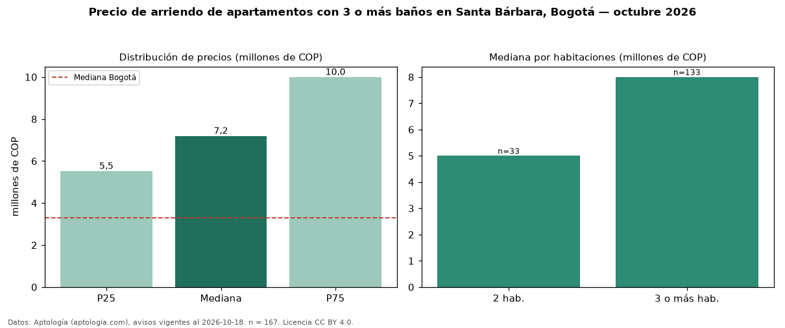

Precio de arriendo de apartamentos con 3 o más baños en Santa Bárbara, Bogotá — octubre 2026
En Santa Bárbara (localidad de Usaquén), Bogotá, la mediana de canon mensual de apartamentos con 3 o más baños es COP 7,20 millones, según 167 avisos vigentes. Eso es 51 % más que la mediana de todos los apartamentos en arriendo de Santa Bárbara (COP 4,78 millones, n = 358); este segmento reúne el 47 % de esos avisos. Por metro cuadrado, la mediana es COP 44.654/m² al mes (n = 165), 11 % por debajo del conjunto de referencia (COP 50.273/m²). El área mediana anunciada es 160 m². El segmento con más oferta es el de 3 o más habitaciones (133 avisos, mediana COP 8,00 millones); pasar de 2 habitaciones a 3 o más habitaciones cambia la mediana +60 %. La administración mediana declarada es COP 1,30 millones al mes (n = 85), aparte del canon. La mitad central de los avisos va de COP 5,52 millones a COP 10 millones (razón 1,8), una dispersión moderada. El estrato más frecuente es 6 (76 % de los avisos con estrato). Datos: Aptología (aptologia.com), CC BY 4.0 — https://www.aptologia.com/arriendo/bogota/santa-barbara. Archivos: PDF, CSV con las cifras y gráfica PNG.

| Avisos únicos | 167 |
|---|---|
| Percentil 25 | COP 5.524.800 |
| Mediana | COP 7.200.000 |
| Percentil 75 | COP 10.000.000 |
| Mediana por m² | COP 44.654 |
Fuente: avisos vigentes de portales inmobiliarios recopilados por Aptología, deduplicados (mínimo 30 avisos únicos por celda). Precios pedidos, no cerrados. Fecha: 2026-10-18.